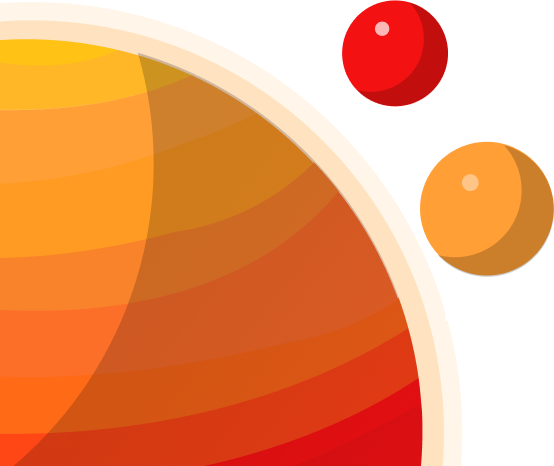

.Sun
The Sun is a huge, glowing ball of hot plasma at the centre of our solar system and provides the
vital energy
needed for life on Earth. This energy radiates outward in the form of light and
heat, providing warmth and
light to the entire solar system.
1.Mercury
Mercury is the closest planet to the sun is known for its extreme temprature and barren,
rocky
surface.It is one of the four terrestrial planets in our solar system, characterized by
their
solid,rocky composition
2.Venus
Venus is often refered to as Earth's "sister planet" due to its similar size and
composition,but
it stands out with its extremely inhospitable enviroment
3.Earth
Earth is the third planet from the Sun and the only known planet to support life. Earth is
the
only planet known to harbor life. It's a diverse and dynamic world with a wide range
of
ecosystems, climates, and geological features.
Moon Planet
Earth has one natural satellite, the Moon, which plays a role in stabilizing the planet's
rotation and tides. The Moon's gravitational pull causes ocean tides to rise and fall.

4.Mars
Mars, often referred to as the "Red Planet," is the fourth planet from the Sun and has
captivated human imagination for centuries with its reddish appearance and potential
for hosting
life.
Martian Moons
Mars has two small moons, Phobos and
Deimos, which are irregularly shaped and
thought to be
captured asteroids
5.Jupiter
Jupiter, the largest planet in our solar system, is a gas giant known for its
immense size, powerful storms, and numerous moons.
6.Saturn
Saturn, often referred to as the "Ringed Planet," is known for its stunning system of
rings
that encircle the planet's equator. It's the sixth planet from the Sun and is one of the
most
visually distinctive objects in our solar system, with more than 80 known satellites.
7.Uranus
Uranus, often referred to as the "Ice Giant," is a unique and
mysterious planet in
our solar system. It stands out due to its
distinct blue-green color and its unusual rotation axis.
8.Neptune
Neptune, often called the "Blue Giant," is the eighth and farthest planet from the
Sun in our solar
system. It is a gas giant known for its
striking blue color and turbulent atmosphere.